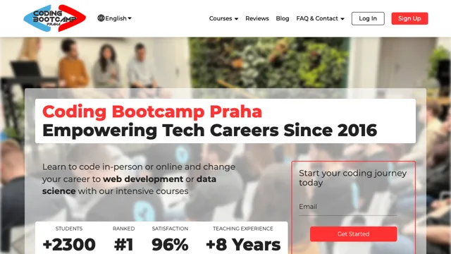

Kurzy od Coding Bootcamp Praha#
Coding Bootcamp Praha už neexistuje. V tomto katalogu je jen pro úplnost, kdyby je někdo ještě hledal.

- Název: Coding Bootcamp Praha
- Web: codingbootcamp.cz
Provozovatel v Česku
- Data4You Digital s.r.o., v likvidaci
- Forma: Společnost s ručením omezeným
- IČO: 06222447
Imper pro junior.guru zdarma poskytl údaje ze své databáze firem Merk. Děkujeme!
Popis#
Coding Bootcamp Praha byl velmi intenzivní kurz programování, který se snažil připravit účastníky na práci v IT v řádu měsíců.
Výuka probíhala původně prezenčně v Praze, později i hybridně a online. Primárně v angličtině, takže cílovou skupinou byli z velké části i cizinci, kteří chtěli začít pracovat v IT a v Praze žili, nebo jim Praha padla do oka jako místo, kde by šlo začít.
Bootcamp na střídačku provozovala neziskovka Data4You z.s. (02858703) nebo firma Data4You Digital s.r.o. (06222447), obě pod vedením sourozenců Jana a Jany Večerkových.
Jana Večerková působila jako hlavní tvář těchto kurzů a často se jí dařilo zviditelňovat Coding Bootcamp Praha v médiích skrze svá vyjádření k tématům IT vzdělávání a trhu práce.
Po roce 2024 utichly sociální sítě bootcampu a jeho webová stránka codingbootcamp.cz začala v různých kratších či delších intervalech vracet akorát chyby. Jana Večerková na svém LinkedIn profilu uvádí, že její angažmá v Data4You z.s. bylo ukončeno v prosinci 2024.
Pokud tento popis umíš nějak doplnit, napiš prosím na honza@junior.guru. Umíš s GitHubem? Pošli Pull Request!
Recenze#
Recenze kurzů najdeš na místním Discordu.
Nevíš si rady s výběrem kurzů? Vždy záleží v jaké jsi konkrétní situaci a co zrovna potřebuješ. A přesně takové věci se na tom našem Discordu taky probírají. Poradíme!